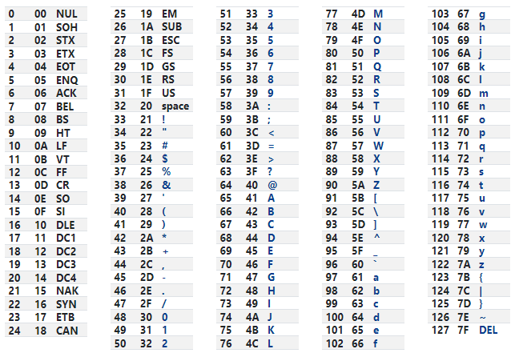

Create a main.cpp and run your first code example
#define _CRT_SECURE_NO_WARNINGS //remove deprecation warnings
#include //code library
int main(){
int x; //declare x as integer (Ex. 1)
double y; //declare y as double (Ex. 3.14)
char z; //declare z as character (Ex. a)
x = 1; //define x, store the number 1 to variable x;
printf("This is x: %d\n", x); //print x to console, %d is a integer variable and "," x is printing out x variable
y = 3.14;
printf("This is x: %.2lf\n", y); //print y to console, %lf is double variable
z = 'a';
printf("This is x: %c\n", z); //print z to console, %c is character variable
return 0;
}
#define _CRT_SECURE_NO_WARNINGS
#include
int main(){
int x;
x = 1.1 + 0.5; //For example, x = 1.1, we add 0.5 to see if number can goes to 2. something.
printf("x is still 1: %d\n", x); //x is still 1 because x = 1.6, chop off all decimal place for integer declarations
x = 1.6 + 0.5;
printf("x is 2: %d\n", x); //x is 2 because x = 2.1, chop off all decimal place again
return 0;
}
First row = decimal number, third row = character

#define _CRT_SECURE_NO_WARNINGS
#include
int main(){
char z;
z = 65; //This will print letter 'A' since 'A' = 65 in ASCII table
printf("z is A: %c\n", z); // print letter 'A'
printf("z is A: %d\n", z); // print integer 65
return 0;
}